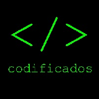
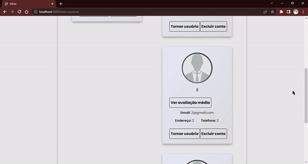

1º semestre - 2022.1
Codificados
Cliente: Cliente interno da FATEC, professor Fabrício Galende
Tema: Sistema de gestão de serviços de tecnologia da informação
Problema: Controlar solicitações de serviços de TI para usuários e técnicos.
Solução: Sistema web para abertura e avaliação de chamados, com Flask e MySQL.

Contribuição: Minha atuação concentrou-se principalmente na função de Product Owner, com responsabilidades relacionadas à organização do backlog, planejamento das sprints e distribuição das tarefas entre os integrantes da equipe. Essa experiência foi importante para desenvolver habilidades de liderança, comunicação, priorização de demandas e acompanhamento do progresso do projeto.